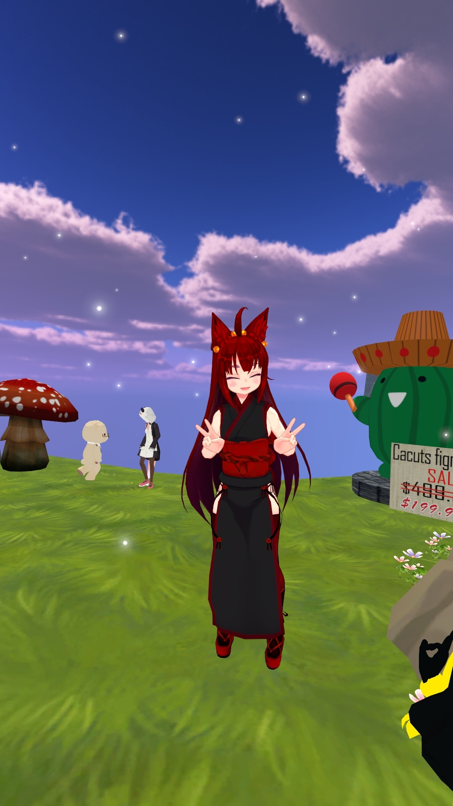

Have you heard of Virtual Reality, right? The technology that "immerse" you into a... basically virtual world. Imagine, you are not just playing a video game, you are inside of a video game!
Sounds interesting, right?
So, for this final project, I want to design a website that will describe and show one of such VR-game called "VRChat". I want to inform my audience, you, about this game, what is it about, and why you should play it.
On this photo, we can see a person using the "Oculus Rift" VR-headset.
via KnowYourMobile
What is the VRChat?
Let's talk a little bit about the game itself. Well, yes, I know, perhaps the video games are not your thing. But the subject I am talking about today is not just a game. The "VRChat" is a PC-videogame, where you are doing exactly what the name is saying about - chatting with people, or better say - communicate with them. Yes, one may call it a "social platform" in the form of a game. There is no chat-system, though, and all you have (and need) for the communicating - a microphone.Although it may sound pretty boring - like you may say: "Oh, yes, social web. We have Facebook for that!". Yes, you are may be right, but, you cannot chat with friends inside of the Facebook, right? In VRChat you can. Or not really you...

One of the users of the game.
My personal screenshot.
Game Features
The VRChat has a very special feature - you, as a player, has an ability to create your character (avatar), whatever you want - cartoon, game, anime, movie character, or even someone real (for example, surfing through the game I saw Kurt Cobain, Hideo Kojima, or Johnny Depp in form of Jack the Sparrow). If there's not so much creator in you (or you just cannot do it because of lack of the knowledge), there, in the game, a lot of "worlds" - which is basically servers - with avatars.Also, of course, you can create a whole world - any possibilities that you can imagine. A place from your favorite movie/cartoon, or your own neighborhood - go ahead!
I personally saw worlds with summer camps, amusement parks or even world with Japanese Shrine.
World of "Sakura Hirobu-night". Place where usually you may find Koreans or Japanese people.
via VRChat site.

Everyone can create the character or world they want, if, of course, the appearance of them is not against general rules - no explicit pics and cursing (since the minimum required age for the playing is 13).
But this if not the main point of the game - at least for me. What I like about "VRChat" is that you can meet people all around the world! Literally. For example, on one server you may meet a person from the USA, Italy, Russia, South Korea or Japan, Australia, Germany, and etc. And of course practice the language with them - if you want to. As for me, I have enhanced my Japanese and made a lot of friends that way!
Recently the "VRChat" developing team has released an official promo-video on their Steam-page (as well as on YouTube-channel).
I decided to attach it here for you so that you will have your own opinion of the game.
An official advertisement video of "VRChat" game.
It was taken from the official channel of the "VRChat" developing team.
Is this game for everyone?
Although it looks like there are bunch of pros in the game, there is one disadvantage, and it is big enough.The problem is, that mostly, mostly among all of the avatars that the game has (or should I say, the community, because the community is the main sponsor of creativity in the game) the main part, like 80% of them are anime-like. Characters from anime, visual novels or manga. That is maybe pretty sad for if don't like anime and such, but, as I said earlier, there might be some avatars based on real people or characters from movies.

This is a screenshot of the game with a player using an avatar of Curt Cobain.
As I said, you may create and use a model of a real person for your avatar.
The screenshot was taken from a video of YouTube-channel called "Spirit".
So, if you are still interested in the "VRChat", do not afraid of "anime-chan", and you want to try it - please, go ahead!
Can I play it and how?
Here are all requirements you need - PC/laptop and the Steam account (to start with). You can register a VRChat account, but it is not required in order to jump into the game.Well, look. As I said, it is a VR-game, and sure you may ask: "Hey, but I do not have a VR-equipment! What a point to speak so long about the game that not everyone can play?"
Do not worry! VR-equipment is not required for the playing. It just opens "gates" for new opportunities inside the game and as a consequence a totally new game experience.
Ah, of course, the price...
The "VRChat" is totally free (only one necessary requirement - the Steam application). No jokes.
According to the official Steam page of the game here is the System Requirements:
- OS: Windows 7, Windows 8.1, Windows 10
- Processor: Intel® i5-4590 / AMD FX 8350 equivalent or greater
- Memory: 4 GB RAM
- Graphics: NVIDIA GeForce® GTX 970 / AMD Radeon™ R9 290 equivalent or greater
- DirectX: Version 11
- Network: Broadband Internet connection
- Storage: 1 GB available space
In "Works Cited" section I put the website for the game so that you do not need to look for it.